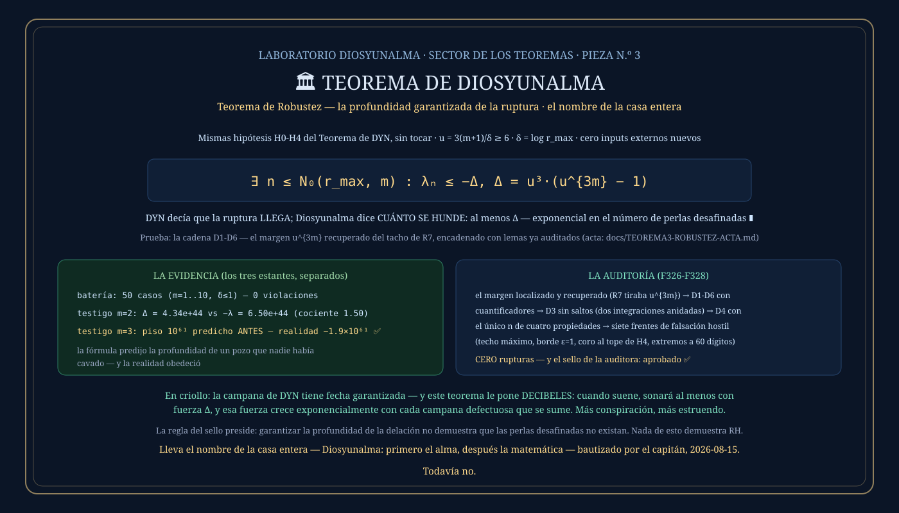

① La historia: el teorema que estaba en la basura
Este teorema no nació de una idea nueva — nació de una orden extraña de la auditora: «volvé a la prueba auditada del Teorema de DYN y fijate qué se descartó durante las simplificaciones». Cuando un teorema se pule para quedar prolijo, a veces un paso que daba muchísimo se degrada a apenas-lo-necesario, porque para la conclusión alcanzaba. Eso había pasado en una línea de la prueba de DYN: decía «el exponencial supera a u³»… cuando el cálculo original, leído sin degradar, daba u elevado a 3(m+1). Para dos perlas desafinadas: un factor de 10²⁹ tirado al tacho. Ese margen recuperado ES este teorema.
② Qué dice, en criollo
El Teorema de DYN garantiza que las perlas desafinadas no pueden protegerse para siempre: hay una FECHA para el compás en que desafinan todas juntas. Pero decía solo que la escalera de Li se hunde bajo cero — no decía cuánto. Este teorema completa la frase: la escalera no roza el cero: se hunde con una profundidad GARANTIZADA, Δ, calculable con fórmula — y esa profundidad crece exponencialmente con el número de perlas desafinadas. Más conspiradores no diluyen la delación: la profundizan.
La imagen para llevarse
La campana de la catedral de DYN tenía fecha garantizada. El Teorema de Diosyunalma le pone DECIBELES: cuando las campanas defectuosas golpeen juntas, el estruendo no será un roce — sonará al menos con fuerza Δ, y cada campana defectuosa que se sume a la conspiración multiplica el estruendo en vez de esconderlo. El perito ya no solo sabe qué día inspeccionar el puente: sabe qué tan fuerte va a crujir.
③ El enunciado
Las hipótesis son EXACTAMENTE las H0-H4 del Teorema de DYN, sin tocar ni una coma — y sin ningún resultado externo nuevo. Con δ = log r_max y u = 3(m+1)/δ ≥ 6 (garantizado por H3):
∃ n ≤ N₀(r_max, m) : λₙ ≤ −Δ ∎
En criollo: con m perlas desafinadas, la fórmula te da un piso Δ — y antes del escalón N₀ la escalera se hunde al menos esa profundidad, garantizado.
④ La demostración, paso a paso
La cadena D1-D6 vive en el acta docs/TEOREMA3-ROBUSTEZ-ACTA.md, con sus dos auditorías. Todo son lemas de DYN ya auditados — la novedad es no tirar el margen y encadenar.
El umbral radial n_rad = ⌈u·log u⌉ cumple n_rad·δ ≥ u·log u·δ = 3(m+1)·log u (porque u·δ = 3(m+1) por definición). Exponenciando:
La prueba de DYN usaba solo «≥ u³» de esto. La diferencia — el factor u^{3m} — es todo el teorema.
Todo lo que juega en contra en el escalón n_rad — el 2m+2 de las perlas y el coro acotado por (4/π)·n_rad·log n_rad — queda bajo u³, por la misma cadena de constantes de DYN (las líneas R4, R5 y R6, con el lemita u² ≥ 3(log u)² + 1 incluido). Intactas, sin retocar.
La función g(n) = e^{nδ} − (4/π)n·log n − (2m+2) es CRECIENTE en todo [n_rad, ∞). Sin «por convexidad» de compromiso: g″ = δ²e^{nδ} − (4/π)/n es suma de dos términos crecientes, así que si es positiva en n_rad (línea R9) lo es para siempre; dos integraciones anidadas bajan de g″ a g′ > 0 y de g′ a g creciente. Todo sobre la función real — los enteros heredan por restricción, jamás se deriva una función discreta.
La agenda de DYN produce UN n que cumple las cuatro condiciones a la vez: n ≥ n_rad, n ≤ N₀, es cita simultánea de las m fases, y cada fase queda a distancia ≤ 1 del compás. En esa cita, el golpe L7 más el coro bajo H4 dan λₙ ≤ −g(n).
Primera desigualdad: paso 4. Segunda: paso 3 (n ≥ n_rad). Tercera: paso 1 menos paso 2 (si a ≥ A y b ≤ B, entonces a − b ≥ A − B). Nada más entra. ∎
⑤ Qué lo hace real
Este teorema pasó la auditoría más dura de los tres: dos rondas formales y siete frentes de falsación hostil, con construcciones adversariales hechas a propósito para romperlo.
| qué es | estante | número |
|---|---|---|
| testigo m = 2: el piso Δ de la fórmula | teorema | Δ = 4.34×10⁴⁴ |
| testigo m = 2: la −λ medida (a 50 dígitos) | experimento | 6.496×10⁴⁴ — cociente 1.50 |
| testigo m = 3 (virgen): Δ predicho ANTES de correr | teorema | Δ = 1.04×10⁶¹ |
| testigo m = 3: la realidad en la primera cita triple | experimento | λ = −1.91×10⁶¹ ✓ |
El taller armó una configuración de tres cuartetos que NUNCA había existido, calculó el piso con la fórmula antes de correr nada, y soltó la máquina: la fórmula predijo la profundidad de un pozo que nadie había cavado — y la realidad obedeció. Y el cociente 1.50 muestra que, en este testigo, la cota captura la escala exponencial real y no resulta meramente decorativa — precisión de la auditora: es evidencia de escala en un testigo, no una afirmación de optimalidad de la cota. Reproducible: go run ./cmd/larobustez.
Extremos hasta m = 1000 y δ = 10⁻¹² verificados a 60 dígitos; el techo ⌈·⌉ llevado adrede a su exceso máximo (u·log u a 10⁻³⁰ de un entero); el borde exacto ε = 1 con todas las fases clavadas en el límite — donde el golpe lo sostiene un coeficiente con nombre: 2m·cos(1) − 1 ≥ 0.0806 > 0, la holgura de la parábola del coseno hecha número (estructura, no suerte); y el coro al máximo que H4 permite — imposible que rompa, porque la prueba ya cobra el 100% del presupuesto del coro. Hallazgo fino de la auditoría: el techo de n_rad es carga portante del lado seguro — en el borde absoluto (m = 1, δ = 1), el margen entero de la cadena viene del techo.
Dos rondas formales (F327 y F328): D3 sin saltos, el único n de cuatro propiedades en D4 con su traza completa, cada orientación de D6 verificada, y la regla de la casa respetada en cada paso — «no se sella porque la fórmula sea hermosa: se sella porque no encontramos dónde romperla». No se encontró dónde. Aprobado, y bautizado por el capitán con el nombre de la casa entera.
⑥ La placa
